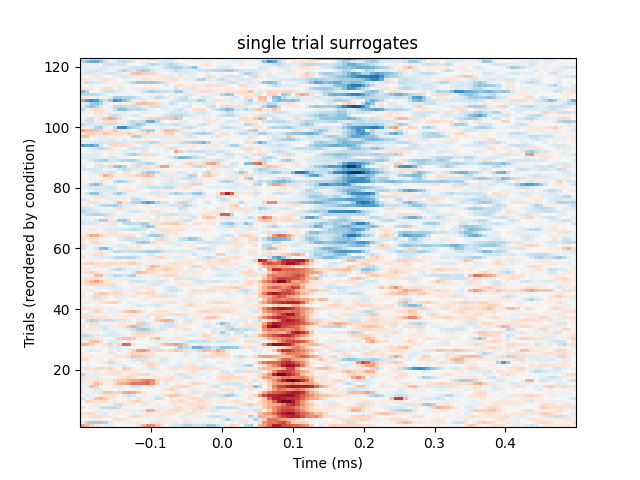
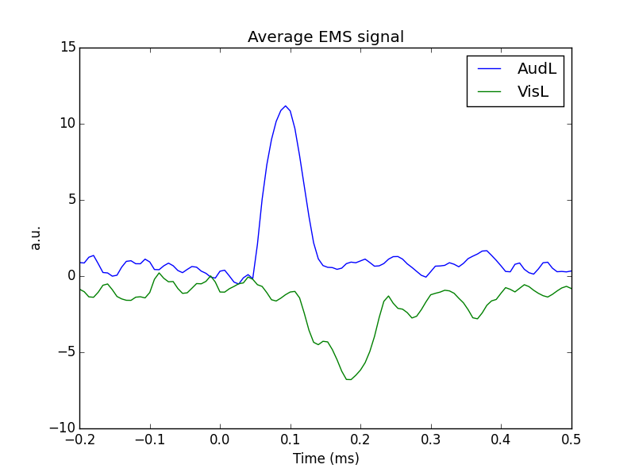
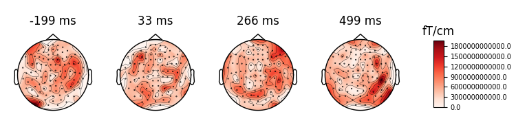

Note
Click here to download the full example code
Compute effect-matched-spatial filtering (EMS)¶
This example computes the EMS to reconstruct the time course of the experimental effect as described in 1.
This technique is used to create spatial filters based on the difference between two conditions. By projecting the trial onto the corresponding spatial filters, surrogate single trials are created in which multi-sensor activity is reduced to one time series which exposes experimental effects, if present.
We will first plot a trials x times image of the single trials and order the trials by condition. A second plot shows the average time series for each condition. Finally a topographic plot is created which exhibits the temporal evolution of the spatial filters.
References¶
- 1
Aaron Schurger, Sebastien Marti, and Stanislas Dehaene, “Reducing multi-sensor data to a single time course that reveals experimental effects”, BMC Neuroscience 2013, 14:122.
# Author: Denis Engemann <denis.engemann@gmail.com>
# Jean-Remi King <jeanremi.king@gmail.com>
#
# License: BSD (3-clause)
import numpy as np
import matplotlib.pyplot as plt
import mne
from mne import io, EvokedArray
from mne.datasets import sample
from mne.decoding import EMS, compute_ems
from sklearn.model_selection import StratifiedKFold
print(__doc__)
data_path = sample.data_path()
# Preprocess the data
raw_fname = data_path + '/MEG/sample/sample_audvis_filt-0-40_raw.fif'
event_fname = data_path + '/MEG/sample/sample_audvis_filt-0-40_raw-eve.fif'
event_ids = {'AudL': 1, 'VisL': 3}
# Read data and create epochs
raw = io.read_raw_fif(raw_fname, preload=True)
raw.filter(0.5, 45, fir_design='firwin')
events = mne.read_events(event_fname)
picks = mne.pick_types(raw.info, meg='grad', eeg=False, stim=False, eog=True,
exclude='bads')
epochs = mne.Epochs(raw, events, event_ids, tmin=-0.2, tmax=0.5, picks=picks,
baseline=None, reject=dict(grad=4000e-13, eog=150e-6),
preload=True)
epochs.drop_bad()
epochs.pick_types(meg='grad')
# Setup the data to use it a scikit-learn way:
X = epochs.get_data() # The MEG data
y = epochs.events[:, 2] # The conditions indices
n_epochs, n_channels, n_times = X.shape
Out:
Opening raw data file /home/circleci/mne_data/MNE-sample-data/MEG/sample/sample_audvis_filt-0-40_raw.fif...
Read a total of 4 projection items:
PCA-v1 (1 x 102) idle
PCA-v2 (1 x 102) idle
PCA-v3 (1 x 102) idle
Average EEG reference (1 x 60) idle
Range : 6450 ... 48149 = 42.956 ... 320.665 secs
Ready.
Current compensation grade : 0
Reading 0 ... 41699 = 0.000 ... 277.709 secs...
Filtering raw data in 1 contiguous segment
Setting up band-pass filter from 0.5 - 45 Hz
FIR filter parameters
---------------------
Designing a one-pass, zero-phase, non-causal bandpass filter:
- Windowed time-domain design (firwin) method
- Hamming window with 0.0194 passband ripple and 53 dB stopband attenuation
- Lower passband edge: 0.50
- Lower transition bandwidth: 0.50 Hz (-6 dB cutoff frequency: 0.25 Hz)
- Upper passband edge: 45.00 Hz
- Upper transition bandwidth: 11.25 Hz (-6 dB cutoff frequency: 50.62 Hz)
- Filter length: 991 samples (6.600 sec)
145 matching events found
No baseline correction applied
Not setting metadata
4 projection items activated
Loading data for 145 events and 106 original time points ...
Rejecting epoch based on EOG : ['EOG 061']
Rejecting epoch based on EOG : ['EOG 061']
Rejecting epoch based on EOG : ['EOG 061']
Rejecting epoch based on EOG : ['EOG 061']
Rejecting epoch based on EOG : ['EOG 061']
Rejecting epoch based on EOG : ['EOG 061']
Rejecting epoch based on EOG : ['EOG 061']
Rejecting epoch based on EOG : ['EOG 061']
Rejecting epoch based on EOG : ['EOG 061']
Rejecting epoch based on EOG : ['EOG 061']
Rejecting epoch based on EOG : ['EOG 061']
Rejecting epoch based on EOG : ['EOG 061']
Rejecting epoch based on EOG : ['EOG 061']
Rejecting epoch based on EOG : ['EOG 061']
Rejecting epoch based on EOG : ['EOG 061']
Rejecting epoch based on EOG : ['EOG 061']
Rejecting epoch based on EOG : ['EOG 061']
Rejecting epoch based on EOG : ['EOG 061']
Rejecting epoch based on EOG : ['EOG 061']
Rejecting epoch based on EOG : ['EOG 061']
Rejecting epoch based on EOG : ['EOG 061']
Rejecting epoch based on EOG : ['EOG 061']
22 bad epochs dropped
# Initialize EMS transformer
ems = EMS()
# Initialize the variables of interest
X_transform = np.zeros((n_epochs, n_times)) # Data after EMS transformation
filters = list() # Spatial filters at each time point
# In the original paper, the cross-validation is a leave-one-out. However,
# we recommend using a Stratified KFold, because leave-one-out tends
# to overfit and cannot be used to estimate the variance of the
# prediction within a given fold.
for train, test in StratifiedKFold(n_splits=5).split(X, y):
# In the original paper, the z-scoring is applied outside the CV.
# However, we recommend to apply this preprocessing inside the CV.
# Note that such scaling should be done separately for each channels if the
# data contains multiple channel types.
X_scaled = X / np.std(X[train])
# Fit and store the spatial filters
ems.fit(X_scaled[train], y[train])
# Store filters for future plotting
filters.append(ems.filters_)
# Generate the transformed data
X_transform[test] = ems.transform(X_scaled[test])
# Average the spatial filters across folds
filters = np.mean(filters, axis=0)
# Plot individual trials
plt.figure()
plt.title('single trial surrogates')
plt.imshow(X_transform[y.argsort()], origin='lower', aspect='auto',
extent=[epochs.times[0], epochs.times[-1], 1, len(X_transform)],
cmap='RdBu_r')
plt.xlabel('Time (ms)')
plt.ylabel('Trials (reordered by condition)')
# Plot average response
plt.figure()
plt.title('Average EMS signal')
mappings = [(key, value) for key, value in event_ids.items()]
for key, value in mappings:
ems_ave = X_transform[y == value]
plt.plot(epochs.times, ems_ave.mean(0), label=key)
plt.xlabel('Time (ms)')
plt.ylabel('a.u.')
plt.legend(loc='best')
plt.show()
# Visualize spatial filters across time
evoked = EvokedArray(filters, epochs.info, tmin=epochs.tmin)
evoked.plot_topomap(time_unit='s', scalings=1)
- 
- 
- 
Note that a similar transformation can be applied with compute_ems However, this function replicates Schurger et al’s original paper, and thus applies the normalization outside a leave-one-out cross-validation, which we recommend not to do.
epochs.equalize_event_counts(event_ids)
X_transform, filters, classes = compute_ems(epochs)
Out:
Dropped 11 epochs
...computing surrogate time series. This can take some time
Total running time of the script: ( 0 minutes 3.657 seconds)
Estimated memory usage: 8 MB